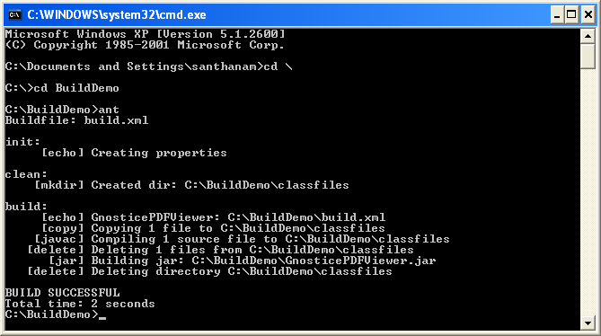

Ant, from the Apache Software Foundation, is a popular tool for building Java applications. You can use Ant to build your Gnostice PDFOne Java applications also.
This tutorial assumes that Ant is installed on your machine and environment variables required by the Ant have been set. To demonstrate the build process with Ant, this tutorial will use a simple java program "SimplePdfViewerDemo.java" and convert it to an executable java archive (.jar) file. You can find this program in the "Samples" directory of PDFOna Java download file.
First create a directory named "BuildDemo". Copy "PDFOne.jar", "bcprov-jdk14.jar" and "pdfonejfont.dll" from the PDFOne Java download file to the directory.
Create subdirectory "src" in the BuildDemo directory. Copy "SimplePdfViewerDemo.java" file provided in the "samples/DocumentReading" of the download file.
Create a plain text file with the following Ant script and save it as "build.xml" in the "BuildDemo" directory.
<project name="GnosticePDFViewer" default="build" basedir="."> <path id="project.classpath"> <pathelement location="."/> <pathelement location="PDFOne.jar"/> </path> <target name="init"> <echo message="Creating properties"/> <!-- The directory where .java files are available --> <property name="source" value="src "/> <!-- The directory where compiled .class files will be generated--> <property name="classfiles" value="classfiles"/> <!-- Class name to be specified in the Main-Class attribute of the manifest while creating the executable jar file--> <property name="MainClass" value="SimplePdfViewerDemo"/> <!-- Path of the PDFOne.jar to be specified in the Class-Path attribute of the manifest while creating the exectutable jar file--> <property name="pdfonejar.classpath" value="PDFOne.jar"/> </target> <target name="clean" depends="init"> <!--Delete existing classfiles directory --> <delete dir="${classfiles}"/> <!--Create classfiles directory --> <mkdir dir="${classfiles}"/> </target> <target name="build" depends="clean"> <echo message="${ant.project.name}: ${ant.file}"/> <!--Copy all .java files from src directory to classfiles directory--> <copy todir="${classfiles}" filtering="false"> <fileset dir="${source}"> <include name="**/*.java"/> </fileset> </copy> <!--Compile all .java files in the classfiles directory--> <javac destdir="${classfiles}" excludes=""> <src path="${classfiles}"/> <classpath refid="project.classpath"/> </javac> <!--Delete all .java files in the classfiles directory--> <delete> <fileset dir="${classfiles}"> <include name="**/*.java"/> </fileset> </delete> <!--Generate jar file--> <jar destfile="GnosticePDFViewer.jar"> <manifest> <attribute name="Implementation-Vendor" value="Gnostice"/> <attribute name="Implementation-Title" value="PDFOne Java PDF Viewer"/> <attribute name="Implementation-Version" value="1.0.0.0"/> <attribute name="Main-Class" value="${MainClass}"/> <attribute name="Class-Path" value="${pdfonejar.classpath}" /> </manifest> <fileset dir="${classfiles}"> <include name="**/*.class"/> </fileset> </jar> <!--Delete classfiles directory--> <delete dir="${classfiles}"/> </target> </project>
Finally, you need to execute "build.xml" using Ant. For this, open Command Prompt. Change current directory to "BuildDemo." Type "ant" and press Enter key to begin the build.
Please note that "build.xml" is the default build file name. If you have had created the build file with another name, then you need to type "ant -buildfile <build_file_name>".
When Ant is launched, it parses "build.xml" and executes commands specified in the XML file.. If Ant was able to successfully complete the build, it will generate a java archive named GnosticePDFViewer.jar.
